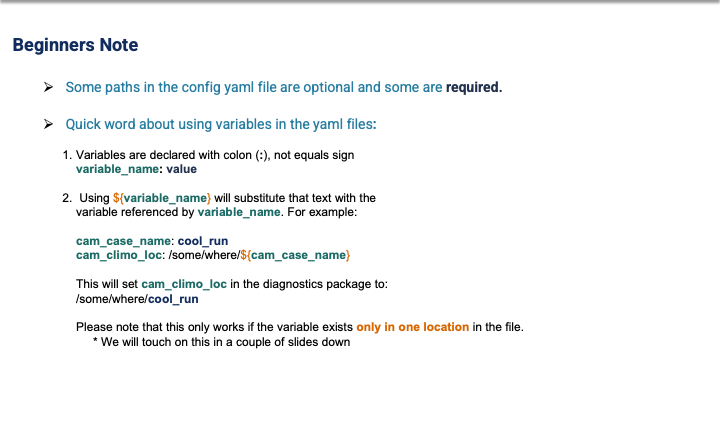
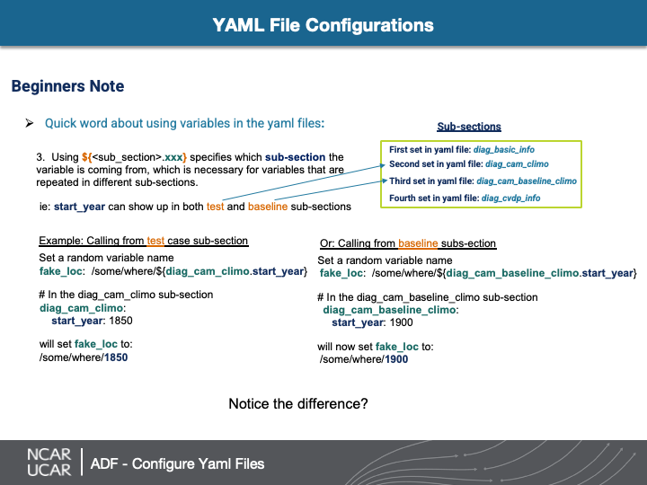

Yaml Config Files
Contents
Yaml Config Files#
Configure yaml file for ADF using the history (h0) files#
Attention
Make copies of these files and modify/customize the copies!
config_cam_baseline_example.yaml (necessary)
lib/adf_variable_defaults.yaml (optional)**
** Additionally, you will need to change the defaults_file path in your copy of config_cam_baseline_example.yaml
YAML File Basics
YAML files are a special type of text file, which in our case (using Python) the information in the yaml file will become dictionaries in python scripts.
Here are a couple hints
Some paths in the config yaml file are optional and some are required
Example#
In the root ADF directory:
cp config_cam_baseline_example.yaml config_adf_tutorial.yaml
Using variables in the yaml file#

Using variables in sub sections#
